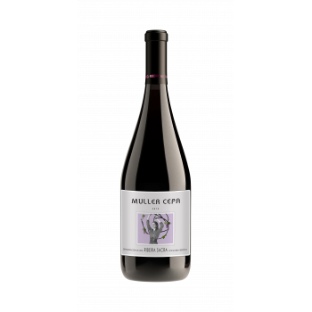
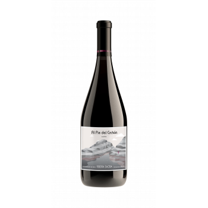
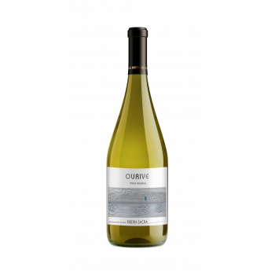
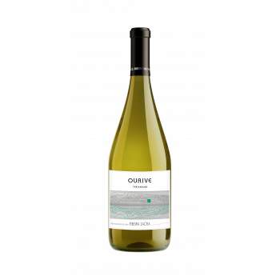
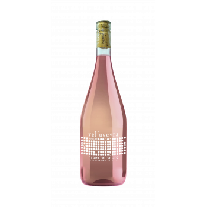

Mencia
Mencia
Vel'uveyra Barrica
Cromatismo rojo violáceo característico de la Mencia. Aromas de sotobosque, bayas silvestres, mora y zarza. El nombre significa "mira el viñedo" en gallego.
13 €
Tintos, blancos y rosados elaborados con variedades autóctonas de la Ribeira Sacra. Cada botella es la expresión del terroir y del trabajo en los bancales del Sil.
Mencia, Merenzao, Brancellao y Caino: cuatro variedades autóctonas que expresan la personalidad de los bancales sobre el Sil.
Mencia
Cromatismo rojo violáceo característico de la Mencia. Aromas de sotobosque, bayas silvestres, mora y zarza. El nombre significa "mira el viñedo" en gallego.

MenciaEdición limitada. Tonos púrpura característicos de las variedades tintas de la Ribeira Sacra. Una selección especial de las mejores parcelas.
 Brancellao
Brancellao
Color rubi distintivo de esta variedad minoritaria autóctona. Expresion pura del terroir, con la elegancia de una cepa casi olvidada.

CainoAromas de ahumados y regaliz, con una característica acidez sostenida. Una variedad con carácter que refleja la exigencia del terreno.
 Merenzao
Merenzao
Aromas a fruta roja especiada, endrinos, rosa. Granitico, fresco, fino y sutil. Una joya de variedad minoritaria.
Dona Branca y Treixadura: variedades blancas autóctonas con producción muy limitada en la D.O. Ribeira Sacra.

Dona BrancaUna rareza: tan solo se elaboran 5.800 kg al año de esta variedad en la D.O. Ribeira Sacra. Notas de frutas exóticas, pomelo y albaricoque, con roble integrado. Servir a 11-12 grados.

TreixaduraMonovarietal con aromas delicados florales, fruta tropical y cítricos. En boca, balsámico y untuoso. Servir a 11-12 grados.

MenciaBrillante y suave color salmón. Aromas delicados frutales. En boca sedoso, con cítricos y mineralidad. Cremoso, fresco y vibrante. Servir a 9-11 grados.
Cada variedad autóctona que cultivamos es un tesoro vivo de la Ribeira Sacra que merece ser preservado y disfrutado.